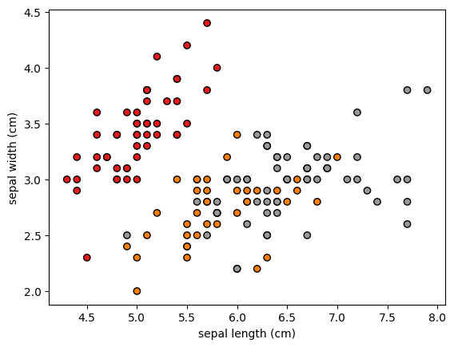
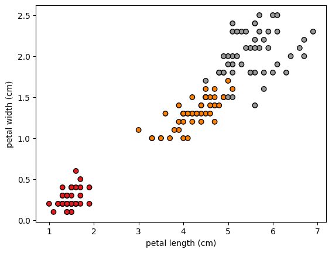
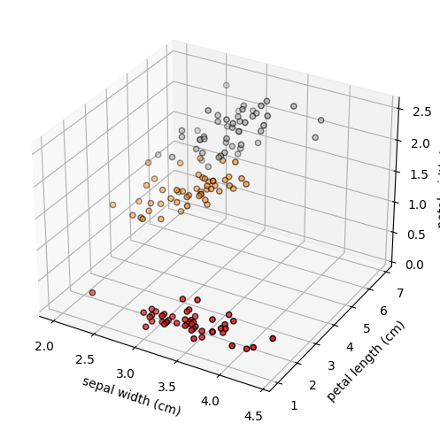

Installation of Packages#
First install packages like numpy, scikit-learn, matplotlib
!pip install numpy scikit-learn matplotlib
Requirement already satisfied: numpy in /home/john/contributions/.venv/lib/python3.10/site-packages (1.23.2)
Requirement already satisfied: scikit-learn in /home/john/contributions/.venv/lib/python3.10/site-packages (1.1.2)
Requirement already satisfied: matplotlib in /home/john/contributions/.venv/lib/python3.10/site-packages (3.6.1)
Requirement already satisfied: threadpoolctl>=2.0.0 in /home/john/contributions/.venv/lib/python3.10/site-packages (from scikit-learn) (3.1.0)
Requirement already satisfied: joblib>=1.0.0 in /home/john/contributions/.venv/lib/python3.10/site-packages (from scikit-learn) (1.1.0)
Requirement already satisfied: scipy>=1.3.2 in /home/john/contributions/.venv/lib/python3.10/site-packages (from scikit-learn) (1.9.1)
Requirement already satisfied: cycler>=0.10 in /home/john/contributions/.venv/lib/python3.10/site-packages (from matplotlib) (0.11.0)
Requirement already satisfied: packaging>=20.0 in /home/john/contributions/.venv/lib/python3.10/site-packages (from matplotlib) (21.3)
Requirement already satisfied: pillow>=6.2.0 in /home/john/contributions/.venv/lib/python3.10/site-packages (from matplotlib) (9.2.0)
Requirement already satisfied: kiwisolver>=1.0.1 in /home/john/contributions/.venv/lib/python3.10/site-packages (from matplotlib) (1.4.4)
Requirement already satisfied: pyparsing>=2.2.1 in /home/john/contributions/.venv/lib/python3.10/site-packages (from matplotlib) (3.0.9)
Requirement already satisfied: python-dateutil>=2.7 in /home/john/contributions/.venv/lib/python3.10/site-packages (from matplotlib) (2.8.2)
Requirement already satisfied: fonttools>=4.22.0 in /home/john/contributions/.venv/lib/python3.10/site-packages (from matplotlib) (4.37.4)
Requirement already satisfied: contourpy>=1.0.1 in /home/john/contributions/.venv/lib/python3.10/site-packages (from matplotlib) (1.0.5)
Requirement already satisfied: six>=1.5 in /home/john/contributions/.venv/lib/python3.10/site-packages (from python-dateutil>=2.7->matplotlib) (1.16.0)
Importation of packages#
We import the necessary packages
import numpy as np
from sklearn.linear_model import Perceptron
from sklearn import datasets, metrics
from sklearn.model_selection import train_test_split
from sklearn.preprocessing import StandardScaler
import matplotlib.pyplot as plot
from sklearn.metrics import confusion_matrix, ConfusionMatrixDisplay
Load Dataset#
We load the necessary IRIS dataset.
iris = datasets.load_iris()
Description of the Dataset#
Input features#
iris.feature_names
['sepal length (cm)',
'sepal width (cm)',
'petal length (cm)',
'petal width (cm)']
Target feature#
iris.target_names
array(['setosa', 'versicolor', 'virginica'], dtype='<U10')
Verify number of records#
print(f"Number of Input Records: {len(iris.data)}")
print(f"Number of Target Records: {len(iris.target)}")
Number of Input Records: 150
Number of Target Records: 150
Visulizing the dataset#
x = iris.data
y = iris.target
plot.scatter(x[:, 0], x[:, 1], c=y, cmap=plot.cm.Set1, edgecolor="k")
plot.xlabel(iris.feature_names[0])
plot.ylabel(iris.feature_names[1])
plot.show()

plot.scatter(x[:, 2], x[:, 3], c=y, cmap=plot.cm.Set1, edgecolor="k")
plot.xlabel(iris.feature_names[2])
plot.ylabel(iris.feature_names[3])
plot.show()

fig = plot.figure(figsize=(6, 6))
ax = fig.add_subplot(projection="3d")
ax.scatter(x[:, 1], x[:, 2], x[:, 3], c=y, cmap=plot.cm.Set1, edgecolor="k")
ax.set_xlabel(iris.feature_names[1])
ax.set_ylabel(iris.feature_names[2])
ax.set_zlabel(iris.feature_names[3])
plot.show()

fig = plot.figure(figsize=(6, 6))
ax = fig.add_subplot(projection="3d")
ax.scatter(x[:, 0], x[:, 2], x[:, 3], c=y, cmap=plot.cm.Set1, edgecolor="k")
ax.set_xlabel(iris.feature_names[0])
ax.set_ylabel(iris.feature_names[2])
ax.set_zlabel(iris.feature_names[3])
plot.show()

Training#
x = iris.data
y = iris.target
x_train, x_test, y_train, y_test = train_test_split(
x, y, train_size=0.7, random_state=12, stratify=y
)
print(f"Number of Training Records (input): {len(x_train)}")
print(f"Number of Training Records (target): {len(y_train)}")
print(f"Number of Test Records (input): {len(x_test)}")
print(f"Number of Test Records (input): {len(x_test)}")
Number of Training Records (input): 105
Number of Training Records (target): 105
Number of Test Records (input): 45
Number of Test Records (input): 45
Standardization of features#
sc = StandardScaler()
sc.fit(x_train)
print(f"Mean: {sc.mean_} \nVariance={sc.var_}")
Mean: [5.8247619 3.07238095 3.73238095 1.19142857]
Variance=[0.59367256 0.20790385 2.950761 0.55849796]
x_train_std = sc.transform(x_train)
x_test_std = sc.transform(x_test)
classifier = Perceptron(max_iter=100, eta0=0.1, random_state=12)
# training
classifier.fit(x_train_std, y_train)
Perceptron(eta0=0.1, max_iter=100, random_state=12)In a Jupyter environment, please rerun this cell to show the HTML representation or trust the notebook.
On GitHub, the HTML representation is unable to render, please try loading this page with nbviewer.org.
Perceptron(eta0=0.1, max_iter=100, random_state=12)
Classification report#
predicted_target = classifier.predict(x_test_std)
# classification report
print(metrics.classification_report(y_test, predicted_target))
precision recall f1-score support
0 1.00 1.00 1.00 15
1 1.00 0.87 0.93 15
2 0.88 1.00 0.94 15
accuracy 0.96 45
macro avg 0.96 0.96 0.96 45
weighted avg 0.96 0.96 0.96 45
Confusion matrix#
cm = confusion_matrix(y_test, predicted_target, normalize="pred")
disp = ConfusionMatrixDisplay(confusion_matrix=cm, display_labels=iris.target_names)
disp.plot(cmap=plot.cm.Blues)
<sklearn.metrics._plot.confusion_matrix.ConfusionMatrixDisplay at 0x7efd1eb55840>
cm = confusion_matrix(y_test, predicted_target, normalize="true")
disp = ConfusionMatrixDisplay(confusion_matrix=cm, display_labels=iris.target_names)
disp.plot(cmap=plot.cm.Blues)
<sklearn.metrics._plot.confusion_matrix.ConfusionMatrixDisplay at 0x7efd1eb749d0>